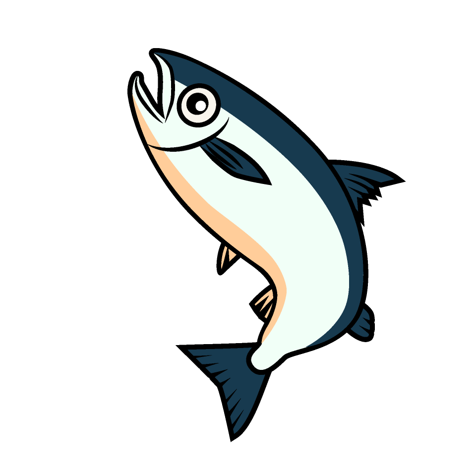
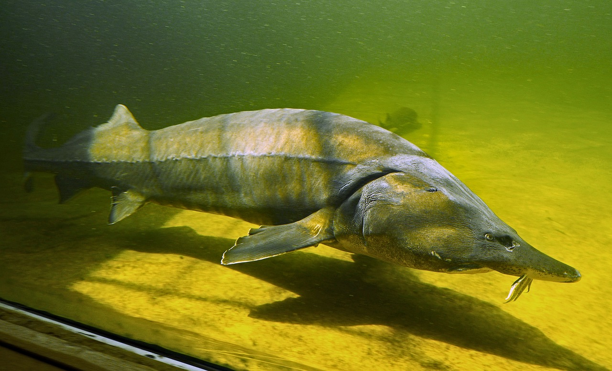

北海道ゾーン
～北の雄大なふるさと～

身近だけれど意外と知らない、北海道の海と川のいきものを展示しています。
ここでしか出会えない珍しいいきものもたくさん！


水族館で楽しむ
268kmの旅
縄文の石狩川下り
水族館の中に古代の石狩川の生態系を再現しました。
水槽は上流域・中流域・下流域に分かれており、それぞれ展示しているいきものが異なります。
中流域水槽に展示されている2m超えの巨大魚チョウザメは大迫力。ぜひご覧ください。

寒流の恵みを
見て楽しむ
親潮大水槽
北海道の海を再現した大きな水槽です。
暖かい海に比べて冷たい海のいきものは地味…と思うことなかれ。
皆様の食卓を支えるあのいきものから、ちょっと不思議でかわいい？いきものまで、
個性的でオイシイいきものが皆様をお待ちしております。